Overview
Introduction
This is my first SQL data cleaning project using MySQL, working with a tech layoffs dataset covering layoffs reported between March 2020 and April 2025. The dataset was compiled from sources such as Bloomberg, TechCrunch, and The New York Times.
Inspired by tutorials from Alex The Analyst, this project focuses on the importance of cleaning and preparing raw datasets before performing any analysis. The goal is to transform messy raw data into clean, consistent, and usable data ready for exploration and visualization.
SQL certifications earned on SoloLearn: Introduction to SQL · SQL Intermediate
Problem Statement
The Ask
The raw layoffs dataset contains several common data quality issues that must be addressed before analysis:
Methodology
Process
Inspect the Raw Data
Explore the dataset structure before making any changes.
SELECT *
FROM layoffs;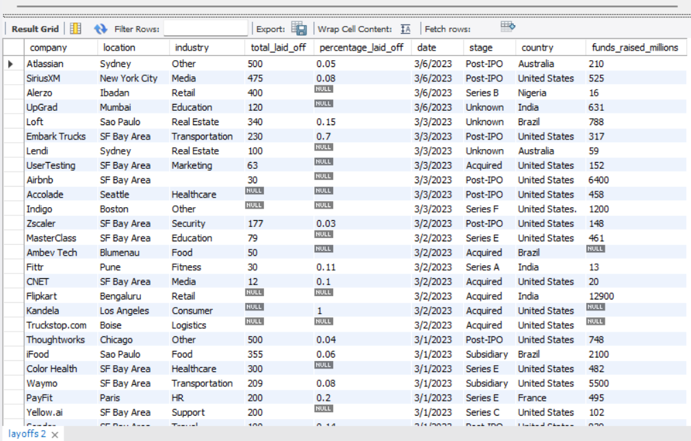
Create a Staging Table
Always work on a copy — never modify the original dataset. Create a staging table as a safe working environment.
CREATE TABLE layoffs_staging
LIKE layoffs;
INSERT INTO layoffs_staging
SELECT *
FROM layoffs;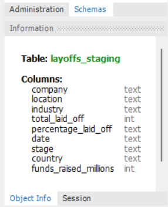
Identify Duplicate Rows
Use the ROW_NUMBER() window function with PARTITION BY to flag duplicate records.
Initial scan with key columns
SELECT *,
ROW_NUMBER() OVER(
PARTITION BY company, industry, total_laid_off, `date`
) AS row_num
FROM layoffs_staging;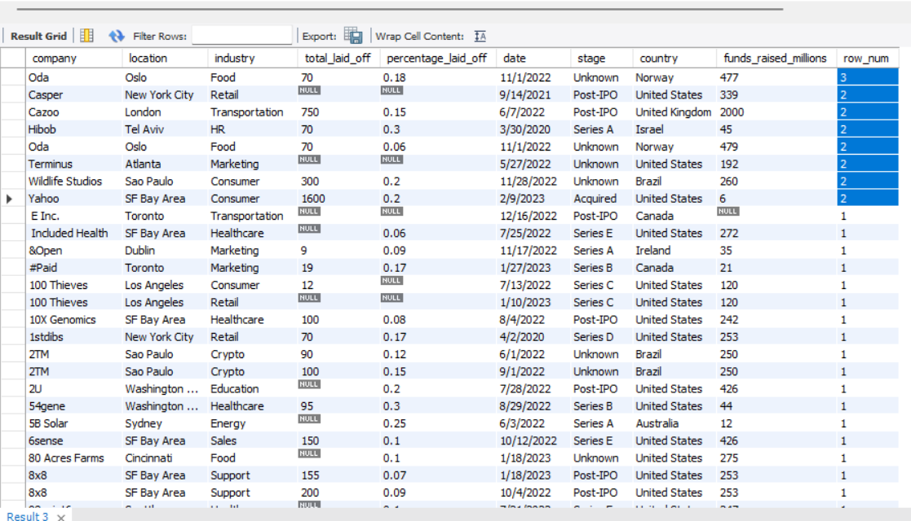
CTE to isolate duplicates across all columns
WITH duplicate_CTE AS (
SELECT *,
ROW_NUMBER() OVER(
PARTITION BY company, location, industry,
total_laid_off, percentage_laid_off, `date`,
stage, country, funds_raised_millions
) AS row_num
FROM layoffs_staging
)
SELECT *
FROM duplicate_CTE
WHERE row_num > 1;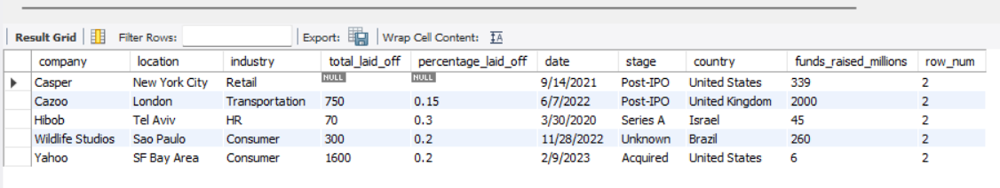
Remove Duplicate Records
Create a second staging table with row_num persisted, then delete all rows where row_num > 1.
Create staging table 2 with row_num column
CREATE TABLE layoffs_staging2 (
company TEXT,
location TEXT,
industry TEXT,
total_laid_off INT,
percentage_laid_off TEXT,
`date` TEXT,
stage TEXT,
country TEXT,
funds_raised_millions INT,
row_num INT
);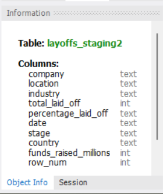
Populate with row numbers
INSERT INTO layoffs_staging2
SELECT *,
ROW_NUMBER() OVER(
PARTITION BY company, location, industry,
total_laid_off, percentage_laid_off, `date`,
stage, country, funds_raised_millions
) AS row_num
FROM layoffs_staging;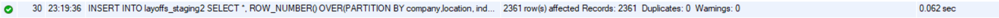
Delete duplicates
DELETE
FROM layoffs_staging2
WHERE row_num > 1;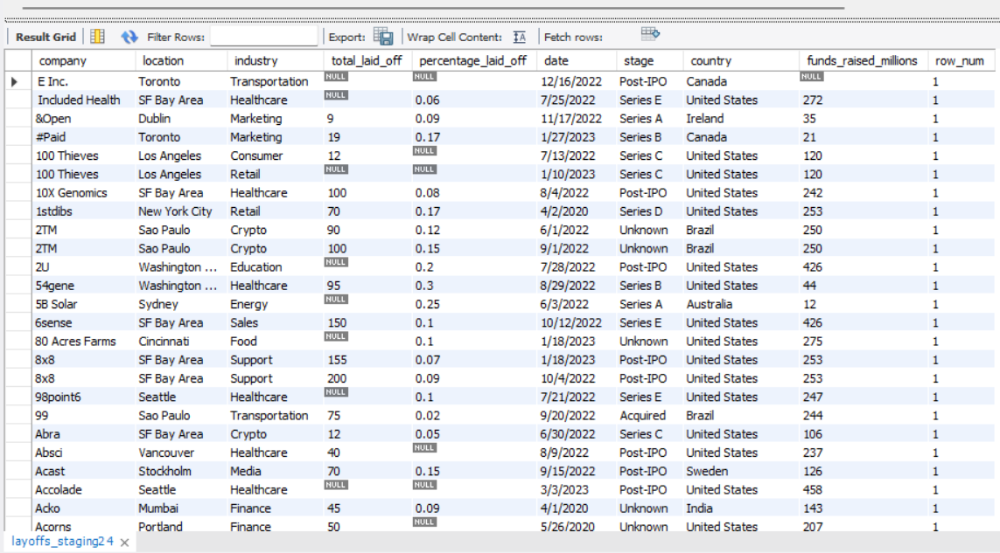
Standardize the Data
Fix inconsistent casing, spelling variants, and trailing characters across text columns.
Trim whitespace from company names
UPDATE layoffs_staging2
SET company = TRIM(company);Unify crypto industry variants
SELECT *
FROM layoffs_staging2
WHERE industry LIKE 'Crypto%';
UPDATE layoffs_staging2
SET industry = 'Crypto'
WHERE industry LIKE 'Crypto%';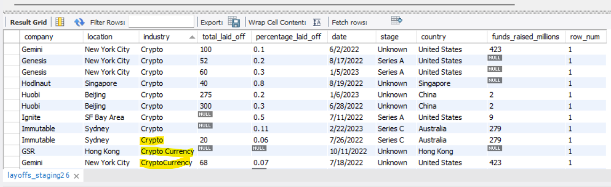
Remove trailing periods from country names
SELECT DISTINCT(country),
TRIM(TRAILING '.' FROM country)
FROM layoffs_staging2
ORDER BY 1;
UPDATE layoffs_staging2
SET country = TRIM(TRAILING '.' FROM country)
WHERE country LIKE 'United States%';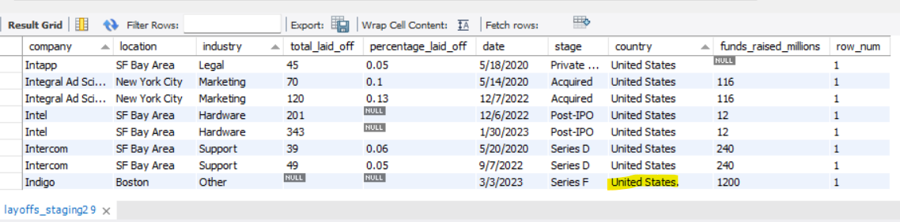
Convert Text Dates to DATE Format
The date column was stored as text — convert it to a real MySQL DATE type using STR_TO_DATE().
Preview the conversion
SELECT `date`,
STR_TO_DATE(`date`, '%m/%d/%Y')
FROM layoffs_staging2;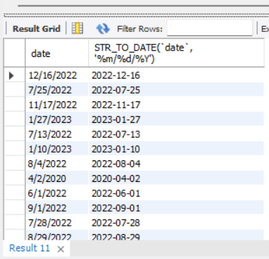
Apply the update
UPDATE layoffs_staging2
SET date = STR_TO_DATE(`date`, '%m/%d/%Y');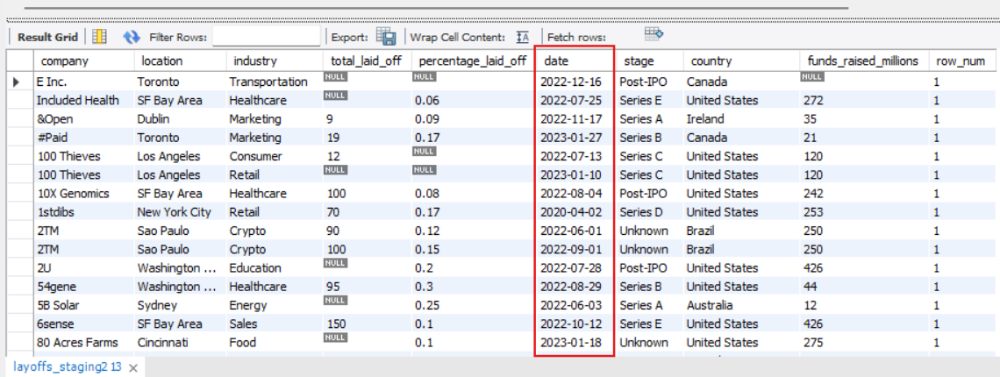
Alter the column data type
ALTER TABLE layoffs_staging2
MODIFY COLUMN `date` DATE;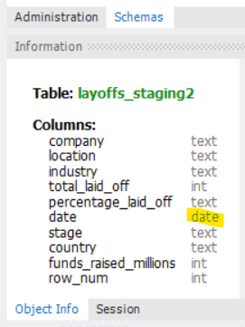
Handle NULL and Blank Values
Identify missing industry values, convert blanks to NULL, then fill them using a self-join on company name.
Find rows with missing industry
SELECT *
FROM layoffs_staging2
WHERE industry IS NULL
OR industry = '';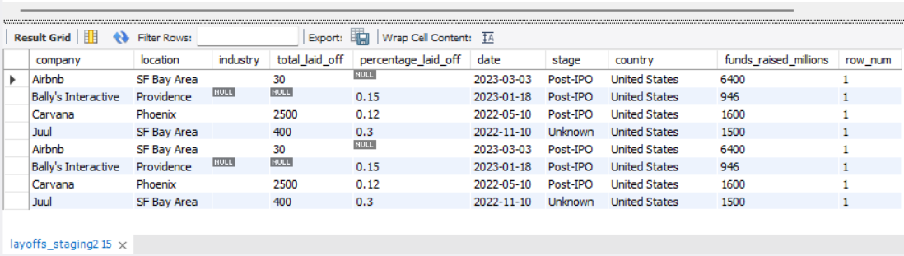
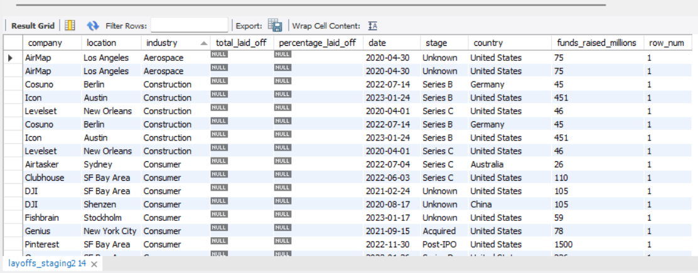
Convert blanks to NULL
UPDATE layoffs_staging2
SET industry = NULL
WHERE industry = '';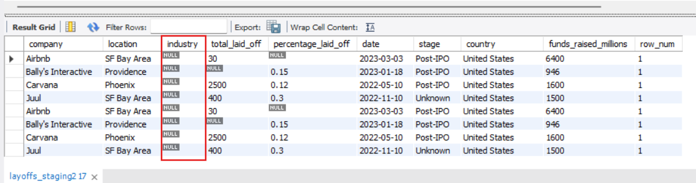
Fill NULLs using self-join
UPDATE layoffs_staging2 AS t1
JOIN layoffs_staging2 AS t2
ON t1.company = t2.company
SET t1.industry = t2.industry
WHERE t1.industry IS NULL
AND t2.industry IS NOT NULL;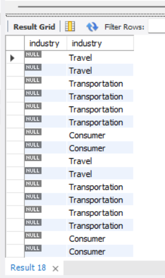
📝 Note
NULL values in total_laid_off, percentage_laid_off, and funds_raised_millions were intentionally kept — they represent genuinely missing data that may be useful in exploratory analysis.
Remove Unnecessary Rows & Columns
Delete rows with no layoff data at all, then drop the temporary row_num helper column.
Delete rows with no layoff data
DELETE
FROM layoffs_staging2
WHERE total_laid_off IS NULL
AND percentage_laid_off IS NULL;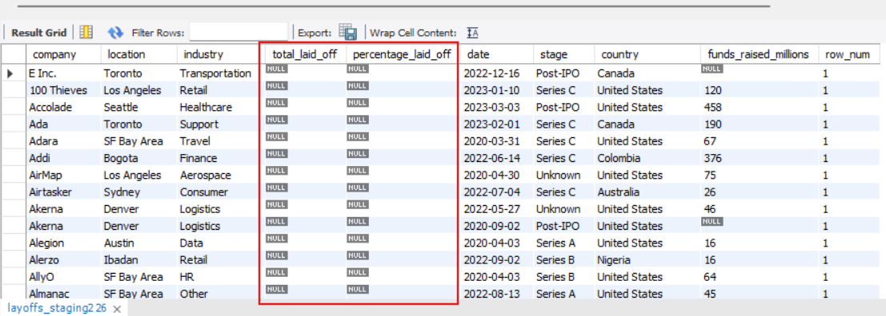
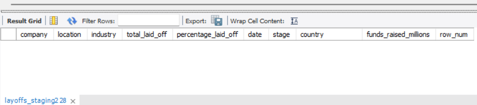
Drop the helper column
ALTER TABLE layoffs_staging2
DROP COLUMN row_num;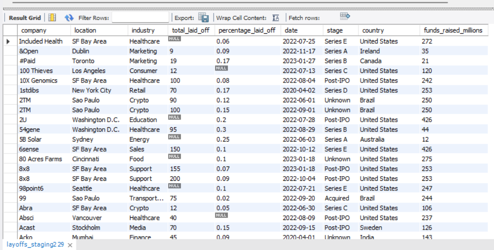
Outcome
Results
The cleaned dataset is now analysis-ready. Key improvements made:
- Duplicate records permanently removed using CTEs and window functions
- Data standardized with consistent industry, company, and country values
- Dates converted from text to proper MySQL DATE format
- Missing industry values intelligently filled via self-join
- Rows with zero analytical value removed
- Dataset ready for layoff trend analysis and visualization
The cleaned dataset can now be used to analyze layoff trends, affected industries, and company workforce reductions across the tech sector from 2020–2025.